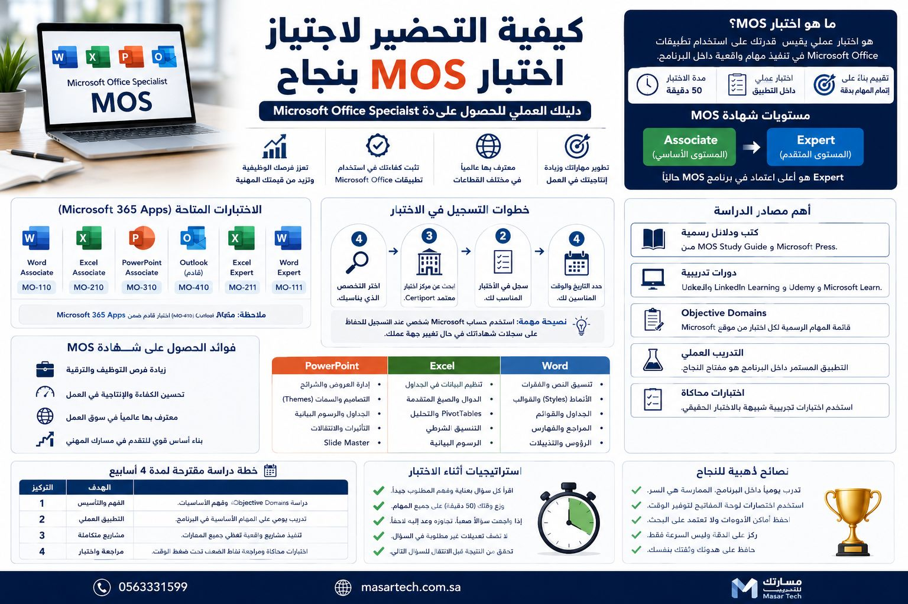

كيفية التحضير لاختبار MOS بنجاح في 2026: خطة عملية لاجتياز شهادة Microsoft Office Specialist

إذا كنت تستعد للحصول على شهادة Microsoft Office Specialist – MOS، فأهم شيء يجب معرفته هو أن الاستعداد لها يختلف عن الاختبارات النظرية التقليدية.
اختبارات MOS مصممة لقياس قدرتك على تنفيذ مهام فعلية داخل تطبيقات Microsoft Office، لذلك لن يكفي أن تعرف أين توجد الأدوات أو أن تحفظ وظائفها؛ يجب أن تستطيع استخدامها بسرعة ودقة أثناء الاختبار.
وتستخدم اختبارات MOS الحديثة الخاصة بـMicrosoft 365 Apps نظام Live-in-the-Application – LITA، وتبلغ مدة الاختبار 50 دقيقة، ما يجعل التدريب العملي وإدارة الوقت عنصرين أساسيين في الاستعداد.
في هذا الدليل ستتعرف على:
اختبارات MOS الحالية.
الفرق بين MOS Associate وExpert.
كيفية اختيار الاختبار المناسب.
خطة مذاكرة عملية.
أهم مهارات Word وExcel وPowerPoint.
كيفية التدريب على طبيعة الاختبار.
أخطاء يجب تجنبها.
خطة للأسبوع الأخير قبل الامتحان.
إذا كنت لا تعرف تفاصيل الشهادة بعد، يمكنك أولًا قراءة ما هي شهادة MOS ولماذا تعتبر مهمة لمستخدمي Microsoft Office؟.
MOS اختصار لـ:
Microsoft Office Specialist
وهو برنامج شهادات يهدف إلى إثبات القدرة العملية على استخدام تطبيقات Microsoft Office وMicrosoft 365 Apps.
ومن التطبيقات المرتبطة حاليًا بمسار Microsoft 365 Apps:
| التطبيق | الاختبار |
|---|---|
| Microsoft Word | MO-110 |
| Microsoft Excel | MO-210 |
| Microsoft PowerPoint | MO-310 |
| Microsoft Outlook | MO-410 – معلن كاختبار قادم |
| Word Expert | MO-111 |
| Excel Expert | MO-211 |
وتوضح Microsoft أن اختبارات Word وExcel وPowerPoint الحالية تدخل ضمن متطلبات الحصول على Microsoft Office Specialist: Associate (Microsoft 365 Apps).
هذه نقطة كانت تحتاج إلى تحديث في كثير من المقالات القديمة.
قد تحصل على Credential متخصص في تطبيق واحد، مثل:
Microsoft Office Specialist: Excel Associate
لكن إذا أردت الحصول على اعتماد MOS متعدد التطبيقات، فهناك مستويان أساسيان حاليًا:
| المستوى | المتطلبات الأساسية |
|---|---|
| MOS Associate | اجتياز 3 اختبارات من برامج مختلفة وفق شروط Microsoft |
| MOS Expert | الحصول أولًا على Associate ثم اجتياز اختبارين Expert في برنامجين مختلفين وفق الشروط الحالية |
للحصول على MOS Associate – Microsoft 365 Apps، تطلب Microsoft اجتياز ثلاثة اختبارات من برامج مختلفة، على أن يكون واحد منها على الأقل من Microsoft 365 Apps.
أما للحصول على MOS Expert – Microsoft 365 Apps، فيجب أولًا الحصول على Associate ثم اجتياز اختبارين Expert من برنامجين مختلفين، مع وجود اختبار Microsoft 365 Apps واحد على الأقل ضمن اختبارات Expert.
وتصف Microsoft حاليًا MOS Expert بأنها أعلى شهادة داخل برنامج Microsoft Office Specialist.
لذلك لا أنصح باستخدام مصطلح MOS Master باعتباره المستوى الحالي الأعلى في المقال.
يوجد محتوى واختبارات MOS مرتبطة بـOffice 2019، لكن Certiport تصف Office 2019 الآن بأنه إصدار سابق Previous Version من برنامج MOS، وتوجه من يريد النسخة الأحدث إلى Microsoft 365 Apps.
لذلك إذا كنت تبدأ التحضير من الصفر في 2026، فالأفضل عادة التأكد أولًا من نسخة الاختبار المحددة التي ستحجزها ثم التدريب على نفس البيئة قدر الإمكان.
مقارنة سريعة
| العنصر | Microsoft 365 Apps | Office 2019 |
|---|---|---|
| الوضع الحالي | المسار الأحدث | إصدار سابق |
| Word | متاح | متاح |
| Excel | متاح | متاح |
| PowerPoint | متاح | متاح |
| Outlook | MO-410 معلن كقادم | متاح |
| Access | ليس ضمن قائمة Microsoft 365 Apps الحالية | موجود في Office 2019 |
| Word Expert | متاح | متاح |
| Excel Expert | متاح | متاح |
Certiport ما زالت تعرض Word وExcel وPowerPoint وOutlook وAccess ضمن برنامج MOS Office 2019، لكنها تصف Microsoft 365 Apps باعتبارها النسخة الأحدث.
اختبارات MOS ليست مجرد مجموعة أسئلة اختيار من متعدد.
التركيز الأساسي هو إثبات المهارة داخل التطبيق.
Certiport تستخدم في اختبارات Microsoft 365 Apps تقنية Live-in-the-Application، وتبلغ مدة الاختبار 50 دقيقة.
وهذا يعني أن السؤال قد يقيس مثلًا قدرتك على:
فتح الملف تنفيذ تعديل محدد الوصول إلى النتيجة المطلوبة.
وبالتالي لا يكفي أن تعرف نظريًا كيف تعمل PivotTable أوStyles أوSlide Master؛ يجب أن تستطيع تنفيذ المهمة فعليًا.
استخدم هذه المعادلة:
Learn Practice Repeat Time Yourself
أي:
تعلم نفذ بنفسك كرر تدرب تحت ضغط الوقت.
الخطأ الشائع هو قضاء 80% من وقت التحضير في مشاهدة الفيديوهات و20% فقط في استخدام البرنامج.
لـMOS أنصح بعكس ذلك تدريجيًا:
شرح أقل + تطبيق أكثر.
لا تبدأ بدراسة كل برامج Office في الوقت نفسه دون هدف.
حدد أولًا التطبيق الأكثر ارتباطًا بعملك.
| هدفك | الاختبار الأنسب كبداية |
|---|---|
| الأعمال الإدارية | Word أوExcel |
| المحاسبة والمالية | Excel |
| تحليل البيانات المكتبي | Excel |
| إعداد التقارير | Word + Excel |
| التدريب والعروض | PowerPoint |
| إدارة المراسلات | Outlook |
| تطوير مهارات Office بشكل شامل | مسار MOS Associate |
| مستوى Excel متقدم | Excel Expert |
إذا كان هدفك تطوير مهاراتك في أكثر من برنامج، يمكنك الاطلاع على دورة MOS في معهد مسارتك، والتي تغطي Word وExcel وPowerPoint وOutlook بتدريب عملي.
أحد أكبر الأخطاء هو أن تدرس البرنامج بالكامل بدون معرفة ما يقيسه الاختبار.
Microsoft تنشر Skills Measured لكل اختبار.
مثلًا اختبار Excel Associate يقيس حاليًا مهارات تشمل:
إدارة Worksheets وWorkbooks.
التعامل مع Cells وRanges.
إنشاء Tables.
استخدام Formulas وFunctions.
إنشاء Charts وObjects.
والفكرة ليست حفظ هذه القائمة.
استخدمها كـChecklist.
| المهارة | درستها | طبقتها | طبقتها بدون مساعدة | جاهز للاختبار |
|---|---|---|---|---|
| إنشاء المستند أوWorkbook | ||||
| التنسيق | ||||
| الجداول | ||||
| Functions | ||||
| Charts | ||||
| References | ||||
| إدارة الملفات |
لا تعتبر الموضوع منتهيًا لأنك فهمته.
اعتبره منتهيًا عندما تستطيع تنفيذه بدون النظر إلى الشرح.
اختبار Word يحتاج منك أن تكون مرتاحًا في التنقل داخل البرنامج وتنفيذ مهام المستندات بسرعة.
Microsoft توضح أن MO-110 يقيس مهارات مثل إدارة المستندات، وإدخال وتنسيق النص والفقرات والأقسام، وإدارة الجداول والقوائم والمراجع والعناصر الرسومية والتعاون على المستندات.
ركز على المهارات التالية
| المجال | أمثلة على المهارات |
|---|---|
| Document Management | إعدادات المستند والتنقل |
| Text Formatting | الخطوط والفقرات والمحاذاة |
| Styles | تطبيق وإدارة الأنماط |
| Sections | الأقسام وPage Setup |
| Tables | إنشاء وتنسيق الجداول |
| Lists | Bullets وNumbering |
| References | Footnotes ومراجع وفهارس بحسب Objectives |
| Graphics | الصور والأشكال |
| Collaboration | التعليقات ومشاركة المستند |
وللتدريب بصورة أعمق، يمكنك قراءة أفضل الممارسات لاستخدام Microsoft Word وفق مهارات MOS.
Excel غالبًا يحتاج تدريبًا أكثر لأن تنفيذ المهمة قد يجمع بين أكثر من مهارة.
اختبار MO-210 Excel Associate يقيس القدرة على العمل مع Workbooks وWorksheets وCells وRanges وTables وFormulas وFunctions وCharts.
المهارات الأساسية
| المجال | ما يجب التدرب عليه |
|---|---|
| Workbooks | إنشاء وإدارة الملفات |
| Worksheets | إدارة الأوراق |
| Cells & Ranges | التنسيق والإدارة |
| Tables | إنشاء وتعديل الجداول |
| Formulas | كتابة الصيغ |
| Functions | استخدام الدوال |
| Charts | إنشاء وتنسيق الرسوم |
| Data | تنظيم البيانات |
الهدف ليس فقط أن تعرف أن الدالة موجودة.
يجب أن تستطيع معرفة:
أي دالة أحتاج؟ وكيف أستخدمها داخل السيناريو؟
إذا كنت تتجه إلى المستوى المتقدم، فاختبار:
MO-211: Microsoft Excel Expert (Microsoft 365 Apps)
يقيس حاليًا أربعة مجالات رئيسية:
| المجال | الوزن في الاختبار |
|---|---|
| إدارة إعدادات Workbook | 10–15% |
| إدارة وتنسيق البيانات | 30–35% |
| Advanced Formulas and Macros | 25–30% |
| Advanced Charts and Tables | 25–30% |
Microsoft تشير كذلك إلى أن المرشح لهذا المستوى ينبغي أن يمتلك خبرة تدريب وتطبيق عملية كبيرة، وتذكر حوالي 150 ساعة من التعليم والممارسة كمرجع للمرشح.
لذلك لا أنصح بالقفز إلى Expert فقط لأنك تعرف Excel بشكل يومي.
في PowerPoint لا يكفي أن يكون العرض “جميلًا”.
الاختبار يقيس قدرتك على تنفيذ وظائف البرنامج المطلوبة بطريقة صحيحة.
ركز على:
إدارة العروض والشرائح.
Layouts.
Themes.
الصور والأشكال.
Tables.
Charts.
Transitions.
Animations.
Slide Master.
ترتيب وإدارة المحتوى.
أفضل تدريب هو أن تبدأ من ملف فارغ وتحاول تنفيذ مشروع كامل بدل تكرار تغيير لون أوFont بشكل منفصل.
هناك فرق كبير بين:
“أعرف أين توجد الأداة.”
و:
“أستطيع تنفيذ المطلوب في 20 ثانية.”
اختبار مدته 50 دقيقة يجعل سرعة التنقل داخل البرنامج مهمة.
لذلك أثناء التدريب:
اقرأ المهمة.
لا تشاهد الحل.
نفذها بنفسك.
تحقق من النتيجة.
أعدها من البداية.
في المحاولة الثالثة استخدم Timer.
هذه الخطة قابلة للتعديل حسب البرنامج ومستواك.
| الأسبوع | الهدف |
|---|---|
| الأسبوع 1 | فهم Objective Domains والأساسيات |
| الأسبوع 2 | تدريب عملي على جميع المهارات |
| الأسبوع 3 | مشاريع كاملة + معالجة نقاط الضعف |
| الأسبوع 4 | اختبارات محاكاة + تدريب بالوقت |
الهدف ليس السرعة بعد.
ركز على معرفة:
مكان الأدوات.
وظيفة كل أداة.
الاختصارات المفيدة.
الفرق بين الخيارات المتشابهة.
طريقة تنفيذ كل Objective.
اعمل Checklist للمهارات الرسمية.
ابدأ في تقليل الاعتماد على الفيديو والمدرب.
خذ مجموعة Tasks وحاول تنفيذها بنفسك.
مثلًا في Excel:
أنشئ Table طبّق Formula Filter أنشئ Chart عدّل التنسيق.
وفي Word:
أنشئ Document Styles Table Header/Footer References.
ابدأ العمل على ملفات تشبه الاستخدام الحقيقي.
مشروع Word
أنشئ تقريرًا يحتوي على:
Cover Page.
Headings.
Styles.
Tables.
Images.
References.
Header/Footer.
مشروع Excel
أنشئ ملفًا يحتوي على:
Data.
Tables.
Functions.
Conditional Formatting.
Charts.
عمليات تحليل حسب المهارات المطلوبة.
مشروع PowerPoint
أنشئ Presentation يحتوي على:
Theme.
Slide Layouts.
Images.
SmartArt أوObjects.
Charts.
Transitions.
Slide Master.
هذه المرحلة يجب أن تكون مختلفة.
لا تتعلم مهارات كثيرة جديدة.
ركز على:
Speed + Accuracy + Weak Areas
اعمل اختبارات أوتمارين محاكاة بطبيعة تنفيذ المهام داخل البرنامج.
وسجل بعد كل محاولة:
| العنصر | النتيجة |
|---|---|
| المهام التي أخطأت فيها | ___ |
| المهام البطيئة | ___ |
| الأدوات التي بحثت عنها | ___ |
| الأخطاء بسبب عدم قراءة السؤال | ___ |
| الموضوع الذي يحتاج مراجعة | ___ |
لا تجعل هدفك:
“أحفظ الاختبار.”
الهدف هو:
“أكتشف لماذا أخطأت.”
بعد كل Simulation، صنف الأخطاء إلى:
Knowledge Error
لم تكن تعرف الوظيفة.
Navigation Error
تعرف الوظيفة لكن لا تعرف أين توجد.
Speed Error
تعرف الحل لكنك بطيء.
Reading Error
فهمت المطلوب بطريقة خاطئة.
Execution Error
عرفت ما يجب فعله لكن نفذته بشكل غير صحيح.
هذا التصنيف يجعلك تعرف كيف تعالج المشكلة بدل إعادة الامتحان عشر مرات.
بما أن الاختبار العملي محدد بزمن 50 دقيقة، فإن إدارة الوقت مهمة.
لا تتعامل مع كل مهمة كما لو أنها أهم مهمة في الاختبار.
إذا كانت مهمة ما تستنزف وقتك، لا تجعلها تمنعك من الوصول إلى بقية المهام عندما يسمح نظام الاختبار بذلك.
والأهم:
اقرأ المطلوب حرفيًا.
لا تضف تعديلات لم يطلبها السؤال.
في Office غالبًا توجد أكثر من طريقة للوصول إلى النتيجة نفسها.
مثلًا:
Ribbon.
Right Click.
Keyboard Shortcut.
Quick Access Toolbar.
لا تحتاج حفظ كل الطرق.
لكن من المفيد معرفة الطريقة التي تجعلك:
أسرع + أقل عرضة للخطأ.
نعم كأداة لتحسين السرعة، لكن لا تجعل هدفك حفظ مئات Shortcuts.
ركز على الاختصارات التي تستخدمها فعلًا باستمرار.
أهم شيء في الاختبار هو الوصول إلى النتيجة الصحيحة، وليس إثبات أنك تستطيع استخدام Keyboard فقط.
ابدأ دائمًا من المصدر الرسمي للامتحان، ثم استخدم التدريب لشرح وتنفيذ المهارات المطلوبة.
ترتيب المصادر المقترح
| المصدر | وظيفته |
|---|---|
| Microsoft Exam Page | معرفة المهارات المطلوبة |
| Objective Domains | Checklist للمذاكرة |
| التطبيق نفسه | التدريب الحقيقي |
| دورة تدريبية | شرح وتطبيق منظم |
| Practice Tests | قياس الجاهزية |
| مشاريع عملية | تثبيت المهارة |
ولا تعتمد على كتاب أوفيديو لمجرد وجود كلمة MOS في عنوانه؛ تأكد من رقم الاختبار والإصدار الذي يغطيه.
اختبارات MOS تقدم عبر Certiport، وهي منصة Pearson VUE المستخدمة لتقديم برنامج الاختبارات. صفحات Microsoft نفسها توجه المتقدمين إلى عملية جدولة الامتحان، بينما توفر Certiport موارد للعثور على مراكز الاختبار وإدارة تجربة الاختبار.
قبل التسجيل:
حدد التطبيق.
حدد رقم الاختبار.
تأكد من الإصدار.
تحقق من لغة الاختبار المتاحة.
ابحث عن مركز اختبار معتمد.
راجع سياسة الاختبار والـRetake.
سجل باستخدام بياناتك الصحيحة.
Microsoft توصي المتقدمين باستخدام حساب Microsoft شخصي MSA عند التسجيل بدل الاعتماد على حساب عمل أوجامعة قد تفقد الوصول إليه مستقبلًا؛ لأنها تحذر من احتمال فقد سجلات الاختبار إذا غادرت المؤسسة المرتبط بها الحساب.
لذلك استخدم حسابًا شخصيًا ستظل قادرًا على الوصول إليه.
اليوم 7–5
راجع جميع Objective Domains.
لا تدرس بصورة عشوائية.
اليوم 4–3
حل مشاريع كاملة.
اليوم 2
نفذ Simulation كامل بالوقت.
اليوم الأخير
راجع أخطاءك فقط.
لا تحاول تعلم عشرات المهارات الجديدة في الساعات الأخيرة.
لا تستخدم شعورك فقط.
اختبر نفسك بهذه الطريقة:
| السؤال | نعم / لا |
|---|---|
| هل أعرف جميع Objective Domains؟ | |
| هل طبقت كل مهارة بنفسي؟ | |
| هل أستطيع العمل بدون فيديو؟ | |
| هل أعرف واجهة البرنامج جيدًا؟ | |
| هل أستطيع تنفيذ Tasks تحت Timer؟ | |
| هل أعرف نقاط ضعفي؟ | |
| هل قمت بمحاكاة اختبار كامل؟ |
إذا كانت لديك عدة إجابات لا، فأنت غالبًا تحتاج تدريبًا إضافيًا.
حفظ الخطوات بدون فهمها
قد يتغير الملف أوالسياق، بينما المهارة نفسها تبقى.
الدراسة النظرية فقط
MOS يقيس القدرة العملية.
التدريب على إصدار مختلف
واجهة البرنامج والخصائص قد تختلف حسب المسار.
تجاهل Objective Domains
قد تضيع وقتًا على موضوعات لا تمثل أولويتك.
البطء في التنقل
حتى لو كنت تعرف المهارة، البطء الزائد يستهلك وقت الاختبار.
عدم قراءة المهمة كاملة
قد تنفذ أمرًا صحيحًا لكنه ليس المطلوب.
القفز إلى Expert مبكرًا
Expert يفترض مستوى متقدمًا حقيقيًا في Word أوExcel.
لا يوجد “أفضل” بصورة مطلقة.
| MOS Associate | Excel Expert |
|---|---|
| يثبت مهارات في عدة تطبيقات | يركز بعمق على Excel |
| مناسب لمن يستخدم Office بشكل شامل | مناسب لمن يعتمد على Excel بصورة متقدمة |
| Word + Excel + تطبيق ثالث ضمن المتطلبات | Advanced Excel |
| مفيد للوظائف المكتبية العامة | أقرب للأدوار التي تعتمد بقوة على Excel |
إذا كان عملك إداريًا ويستخدم عدة تطبيقات، فقد يكون Associate منطقيًا.
أما إذا كنت تعتمد على Excel في التحليل والتقارير والحسابات، فقد يكون تطوير Excel إلى Expert أكثر ارتباطًا بعملك.
الاختيار يعتمد على الهدف.
إذا كنت تريد تأسيسًا شاملًا في Office والاستعداد لمسار MOS، يمكنك اختيار دورة MOS في معهد مسارتك.
أما إذا كان احتياجك الأساسي Excel فقط، فالتدريب المتخصص في Excel قد يسمح لك بالتعمق أكثر.
صفحة دورة MOS في مسارتك تركز حاليًا على Word وExcel وPowerPoint وOutlook ضمن برنامج تدريبي مدته أربعة أسابيع في الرياض.
إذا كنت تبني Topic Cluster كامل حول MOS، استخدم هذه المقالات حسب رحلة المستخدم:
لفهم الشهادة
ما هي شهادة MOS ولماذا تعتبر ضرورية لمستخدمي برامج Office؟
لمقارنة شهادات Microsoft
الفرق بين MOS وشهادات Microsoft الأخرى
لمعرفة المسار الكامل للحصول على الاعتماد
كيف تصبح أخصائيًا معتمدًا في برامج Microsoft Office؟
لفهم القيمة المهنية
كيف تؤهلك شهادة MOS لتحسين فرصك الوظيفية؟
لتطوير Word
أفضل الممارسات لاستخدام Microsoft Word وفق معايير MOS
للتدريب المنظم
دورة MOS – Microsoft Office Specialist في معهد مسارتك
كم مدة اختبار MOS؟
اختبارات MOS Microsoft 365 Apps الحالية لدى Certiport مدتها 50 دقيقة للجزء الموقّت من الامتحان. وقد يحتاج الحضور الكامل للمركز إلى وقت إضافي للإجراءات وتسجيل الدخول والتعليمات.
هل اختبار MOS عملي أم نظري؟
الاختبارات الحديثة تعتمد على Live-in-the-Application Testing، أي تنفيذ مهام مرتبطة بالتطبيق الفعلي بدل الاعتماد على الحفظ النظري فقط.
ما اختبارات Microsoft 365 Apps الحالية؟
Microsoft تعرض حاليًا MO-110 لـWord وMO-210 لـExcel وMO-310 لـPowerPoint ضمن مسار Associate، بينما MO-410 Outlook مدرج كاختبار قادم.
ما أعلى مستوى في MOS حاليًا؟
تصف Microsoft Microsoft Office Specialist: Expert بأنها أعلى شهادة ضمن برنامج MOS الحالي.
هل يجب الحصول على MOS Associate قبل MOS Expert؟
للحصول على اعتماد MOS Expert متعدد التطبيقات، نعم؛ Microsoft تشترط الحصول أولًا على MOS Associate ثم استكمال متطلبات Expert.
هل يمكن الحصول على Excel MOS فقط؟
نعم. يمكنك الحصول على Credential خاص بـExcel، مثل Microsoft Office Specialist: Excel Associate (Microsoft 365 Apps)، بدون أن يكون هدفك بالضرورة استكمال MOS Associate متعدد التطبيقات.
هل التدريب العملي ضروري؟
نعم، لأن الاختبار يقيس تنفيذ المهام داخل التطبيق نفسه، ولذلك التدريب العملي هو أهم أجزاء الاستعداد.
هل Office 2019 ما زالت لها اختبارات MOS؟
نعم، لكن Certiport تصف Office 2019 بأنها النسخة السابقة من برنامج MOS، بينما Microsoft 365 Apps هي المسار الأحدث.
هل Access موجود في MOS Microsoft 365 Apps؟
Access ما يزال ظاهرًا ضمن برنامج Office 2019 لدى Certiport، لكنه ليس ضمن قائمة اختبارات Microsoft 365 Apps Associate الحالية المنشورة من Microsoft.
أفضل طريقة للتحضير لاختبار Microsoft Office Specialist هي ألا تتعامل معه كمادة نظرية.
ابدأ بـ:
اختيار الاختبار الصحيح قراءة Objective Domains تعلم المهارة تنفيذها بنفسك تنفيذ مشاريع كاملة التدريب بالوقت تحليل أخطائك دخول الامتحان.
وإذا كنت تستعد لمسار Microsoft 365 Apps الحالي، ركز على نسخة الامتحان التي ستحجزها بدل الاعتماد على كتب ومقالات قديمة عن إصدارات Office السابقة.
وتذكر أن الهدف ليس فقط اجتياز MOS.
القيمة الحقيقية أن تصبح قادرًا على استخدام:
Word + Excel + PowerPoint + Outlook
بكفاءة داخل بيئة الدراسة والعمل.
وإذا كنت تريد برنامجًا تدريبيًا منظمًا يجمع هذه التطبيقات مع التطبيق العملي، يمكنك الاطلاع على دورة MOS في معهد مسارتك بالرياض، والتي تقدم حاليًا تدريبًا على Word وExcel وPowerPoint وOutlook مع الاستعداد لطبيعة اختبارات Microsoft Office Specialist.
دورات ذات صلة
دورة أخصائي مايكروسوفت أوفيس MOS | تأهيل لشهادة Microsoft Office Specialist أونلاين وحضوري بالرياض
المدة: 28 Days
أقرب موعد: الجمعة 04-12-2026
دورة MCSE Data Management and Analytics بالرياض | احتراف تحليل البيانات وSQL Server
المدة: 5 Days
أقرب موعد: سيتم تحديده قريبًا
عرض تفاصيل البرنامج
دورة CIPD للموارد البشرية | تدريب احترافي في People Practice وPeople Management أونلاين وحضوري بالري
المدة: 5 Days
أقرب موعد: سيتم تحديده قريبًا
دورة ممارس إدارة المواهب المعتمد (TMP™ - Talent Management Practitioner)
المدة: 5 Days
أقرب موعد: سيتم تحديده قريبًا
دورة OpenShift Application Development بالرياض | تطوير الحاويات
المدة: 5 Days
أقرب موعد: سيتم تحديده قريبًا
عرض تفاصيل البرنامج
الشهادة الإحترافية في إدارة المعارض (UFI-EMS) UFI-Exhibition Management School
المدة: 5 Days
أقرب موعد: سيتم تحديده قريبًا
عرض تفاصيل البرنامج
دورة Certified Crisis Management Professional | إدارة الأزمات
المدة: 5 Days
أقرب موعد: سيتم تحديده قريبًا
عرض تفاصيل البرنامج
دورة Red Hat Identity Management | إدارة الهوية المؤسسية
المدة: 5 Days
أقرب موعد: سيتم تحديده قريبًا
عرض تفاصيل البرنامج